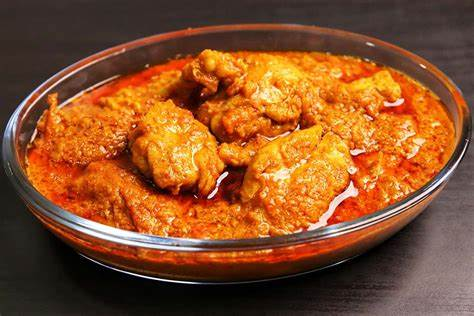

Biryani

Korma is a flavorful and creamy curry dish that originated in South Asia, particularly in the Indian subcontinent. It typically consists of meat (such as chicken, mutton, or beef) or vegetables cooked in a rich, aromatic gravy made with onions, tomatoes, yogurt or cream, and a blend of spices. Korma is known for its creamy texture and mild yet fragrant flavors, often featuring ingredients like almonds, cashews, and saffron. It's a popular dish in Indian, Pakistani, and Mughlai cuisines, often served with rice, naan, or roti.
Ingredients
- Meat (chicken, mutton, beef)
- Onions
- Tomatoes
- Ginger-garlic paste
- Yogurt or cream
- Ginger-garlic paste
- Cashew nuts or almonds (optional, for creaminess)
- Whole spices (like cinnamon, cardamom, cloves)
- Mint leaves
- Spices (such as cumin, cardamom, cinnamon, cloves, bay,leaves, and saffron)
- Ghee or oil
- Ground spices (like turmeric, cumin, coriander, red chili powder)
- Fresh coriander leaves (for garnish)
- Salt to taste
Instructions
- Cook whole spices in ghee, add onions, and brown.
- Add ginger-garlic paste, tomatoes, and spices, cook until soft.
- Add water or broth, cover, and simmer until meat is cooked or veggies are tender.
- Stir in yogurt or cream, and optionally ground nuts paste for richness.
- Adjust seasoning, garnish with coriander leaves.
- Enjoy hot with rice, naan, or roti.